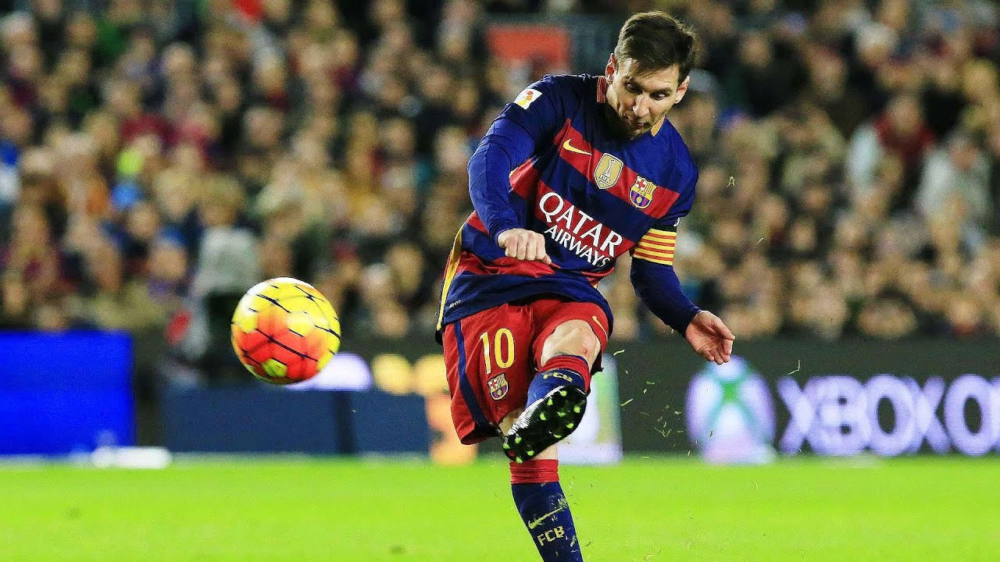

Buy Messi Pro Size 3 Training Football | Footballs | Argos Messi's insane footballing brain. If there was a test for footballing IQ, then I'm pretty sure Messi would come top. While we're all acutely aware of Messi's impeccable dribbling and unerring ...
Amazon.com: messi soccer ball Dani Alves has said the best piece of advice he could offer new Barcelona signing Sergino Dest is simply to give the ball to Lionel Messi. Dest, 20, joined Barca from Ajax last month in a deal ...
Watch: Lionel Messi produces ridiculous first touch to ... LIONEL MESSI showed his brilliance once again with a sensational piece of ball control in Argentina's 1-1 draw with Paraguay. The Barcelona superstar proved age is just a number as the 33-year-old ...
Messi & Ronaldo: Biggest Stars In World Football | GoalBall Messi has short legs but they are so strong, he can accelerate quickly is the style, helps him control the ball well and very easy to dribble the ball at high-level. Mr Pep Guardiola commented that “he is the only player who can run with the ball faster than running without the ball”.
Barcelona icon Alves tells Dest Just give ball to Messi In a sign of protest, Messi booted the ball towards referee Alejandro Hernández. Fortunately for the Barca superstar, he narrowly avoided hitting the official - saving him a red card.
Lionel Messi: Barca star's 'mind-blowing skills without ... Lionel Messi is an Argentine-born football (soccer) player who was named Fédération Internationale de Football Association (FIFA) world player of the year five times (2009–12 and 2015). Naturally left-footed, quick, and precise in control of the ball, Messi is known as a keen pass distributor and can readily thread his way through packed ...
Lionel Messi: Gary Lineker on football's 'bewildering ... Messi has won football's greatest individual prize - the Ballon d'Or - a record six times Lionel Messi is a player who stirs feelings like no other. He turns sport into art.
Lionel Messi is the 'Harry Potter of soccer', says Vieri LIONEL MESSI showed his brilliance once again with a sensational piece of ball control in Argentina's 1-1 draw with Paraguay. The Barcelona superstar proved age is just a number as the 33-year-old showed amazing flexibility to pluck the ball out of the sky. As he lurked on the edge of the box, a ...
Lionel Messi | Biography & Facts | Britannica Lionel Messi's sensational bit of play for Argentina saw him control the ball at an estimated 1.83m in the air against Paraguay. The six-time Ballon d'Or winner continues do things out of this ...
Lionel Messi Controlled The Ball At An Estimated Height Of ... "messi training ball on string" SKLZ Star Kick Trainer Football Training Aid - Hands Free Solo Practice Training Aid With Belt & Elastic Rope, Fits Size #3, #4, and #5 Footballs 4.4 out of 5 stars 3,746
Lionel Messi boots ball towards referee during Alaves vs Barcelona | GiveMeSport
2020.11.18 15:17

GiveMeSport Home Football Boxing WWE UFC Gaming Formula 1 Athletics GMSWomen All sports NBA NFL Cricket MLB Golf Tennis Snooker MLS Winter Sports Rugby Olympics Football News Results & Fixtures Tables Video Popular Pages Quizzes Football Barcelona
Lionel Messi boots ball towards referee during Alaves vs Barcelona
By Rob Hoskin 21:19 31/10/20 GMT share on Facebook share on Twitter share on WhatsApp share on WhatsApp share on Linkedin share on Flipboard share on Messenger share on Email
Lionel Messi hasn’t made the greatest start to the 2020/21 season.
The Argentine was linked with a sensational move away from Barcelona all summer but eventually stayed at Camp Nou.
After a summer of speculation, though, the Argentine hasn’t exactly hit the ground running scoring three goals in seven appearances ahead of Barcelona’s trip to Alaves.
And his frustrations continued in the first half against Alaves.
Barca found themselves 1-0 down following Luis Rioja’s strike for the home side.
And things just weren’t falling for Messi and decisions weren’t going his way.
Frustrations soon boiled over for the six-time Ballon d’Or winner.
After Frenkie de Jong was denied a penalty and Messi wasn’t given a foul for a foul outside the area, the Argentine lost his head.
In a sign of protest, Messi booted the ball towards referee Alejandro Hernández. Fortunately for the Barca superstar, he narrowly avoided hitting the official - saving him a red card.
It did earn him a yellow card but he can, perhaps, consider himself fortunate that it wasn’t worse.
Check out the incident below:
Fans clearly believed Messi was fortunate to avoid a red card. Check out the reaction below:
Earlier this week, former Barca player and Argentine legend, Diego Maradona, admitted that Messi's situation at the Spanish club is going to 'end badly'.
"I knew it was going to end badly and I thought Leo was going to leave," Maradona told the Argentinian newspaper Clarin (via Marca) . "It happened to me too.
"Barcelona is not an easy club and he has been there for many years and was not treated as he deserves.
"He gave them everything, he took them to the top and one day he wanted to leave to get a change of scenery and they said no."
Lionel Messi and key players must take pay cut or club could go bankrupt Who's scored the most goals after 10 Champions League games? Who is the greatest player in football history? Alaves Barcelona Football La Liga Lionel Messi next story previous story News Now - Sport News
Related articles
No Cristiano Ronaldo and Lionel Messi? Gonzalo Higuain picks three players who are 'the best' Jack Grealish: Which club will the Aston Villa star sign for next? Lionel Messi: Barca star's 'mind-blowing skills without touching the ball' are going viral Lionel Messi: Barcelona star was told by referee to ‘show respect’ to Liverpool Ronaldo, Neymar & Pogba: Which players have broken the transfer world record? share on Facebook share on Twitter share on WhatsApp share on WhatsApp share on Linkedin share on Flipboard share on Messenger share on Email See all Barcelona Results & Fixtures
Trending Barcelona Stories
Lionel Messi: Barca star's 'mind-blowing skills without touching the ball' are going viral View full table
Latest Barcelona articles
Ballon d'Or: Fans are naming the players who 'feel like winners'
Football 2 days ago
Liverpool and Barcelona stars appear in Javier Mascherano's all-time squad of teammates
Football 2 days ago
Javier Mascherano retires: Luis Suarez’s reaction to Argentine’s only Barcelona goal
Football 2 days ago
Cristiano Ronaldo vs Lionel Messi: Barca and Juventus stars' records vs World Cup winners
Football 3 days ago
Lionel Messi: Remembering the Barcelona star’s incredible 91-goal year in 2012
Football 3 days ago
Lionel Messi's goal and assist stats if he'd played as many games as Cristiano Ronaldo
Football 3 days ago More Barcelona news
Latest Football articles
Grealish, Mbappe and Kane: Who are the greatest players in Europe this season?
Football 2 minutes ago
Spurs loanee backed to make huge impact upon return
Football 32 minutes ago
Manchester City signed three Thai players in 2007 - what happened to them?
Football 40 minutes ago
Premier League: The most valuable XI of uncapped players is worth £285m
Liverpool midfielder Jordan Henderson defended by Danny Murphy
Football 2 hours ago More Football news GiveMeSport About Privacy Legal Accessibility Cookies Terms Sponsored Academy Contact Facebook Twitter YouTube Instagram